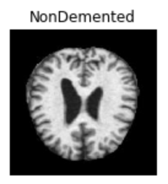

Prediction Goal
How can we use classification as a mean to predict if the patient is demented based on MRI image?
Data Exploration
The image data are stored and retrieved from Firebase Storage
Two classes: ModerateDemented, NonDemented
104 Files for testing, 20 files for validation
Model Exploration
Use tf.keras.Sequential() to group a linear stack of layers into the prediction model
Model made up with three convolution blocks
Data are rescaled with standardization
Sample Prediction Results
|
|
|
|
|

|
|
|
More Details
If you want to look deeper into the results or how the model is being built, you can view the python notebook for more details.
The complete results are uploaded to Firebase.